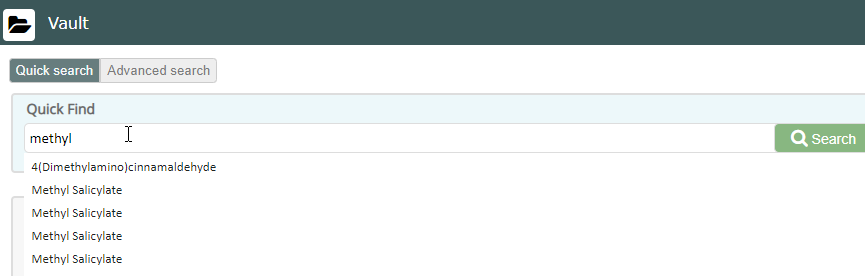
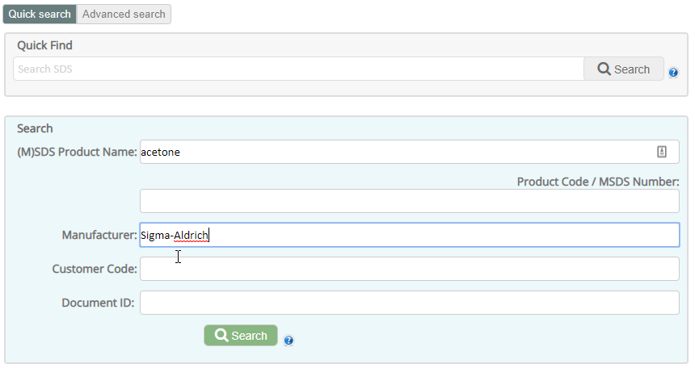
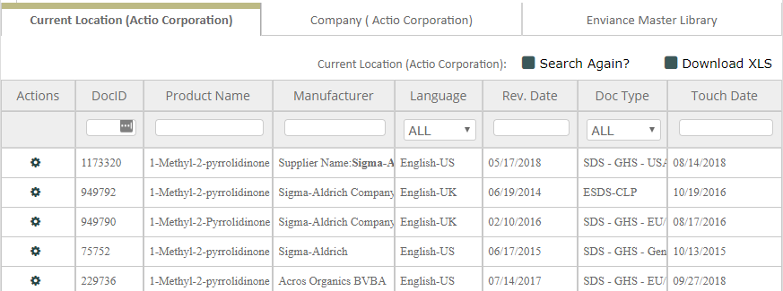
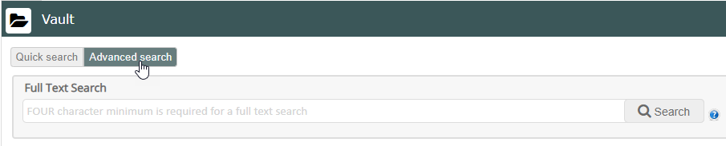
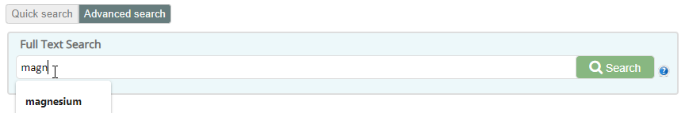
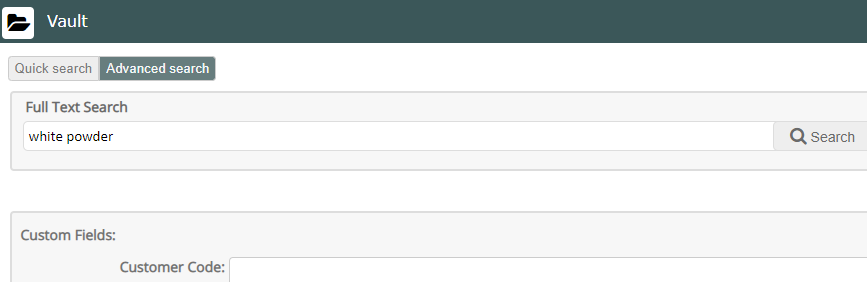

Vault provides different ways to find SDS and related documents.
Quick Search allows searching your company library by location using the standard fields. Results can be viewed for the Current Location (selected in the location box at the top of the page), or for the Company (includes all company locations).
Advanced Search allows a more thorough search of both standard and custom fields. The Full Text Search will find each occurrence of a word or phrase in any field anywhere within the SDS. In the Advanced Search you may also view results found in the EMS Master Library, as well as Current Location and Company.
Quick Search searches only your company's products. The standard search fields in Quick Search include MSDS Product Name, manufacturer, Product Code/MSDS Number, Customer Code and Document ID. You can search all fields at once (except Document ID) in the Quick Find feature, or search one or more individual fields in the main search.
To find SDS in your company with Quick Find:
In the Quick Find field, enter text to search for.
Quick Find will search for the occurrence of the search terms in any of the four fields: Product Name, Product Code / MSDS Number, Manufacturer Name, or Customer Code.
Matching results are displayed as you type. Select a suggested option or click Search to see all matches.

To search company SDS by individual fields:
Enter search text in the desired fields below the Quick Find.
As you type, matching results will be displayed for you to select from, or you can leave the text as you entered it. You can add search text in other fields to combine the search.

Click Search at the bottom of the page.
Search results show all SDS documents assigned to the current location (indicated in Current Location tab) that match your search criteria.

To view results for your entire company, select the Company tab. The Company is the top level shown in the hierarchy in the location box at the top of the page. It shows results of your search for all company locations.
To search in a different location, change the location in the box at the top of the page and re-initiate the search.
If you need to do a more detailed search, or want to find SDS in the EMS Master Library, you can use Advanced Search.
At the top of the Vault Search page, click Advanced Search.

In Advanced Search you can do a Full Text Search, which will search all fields anywhere in the SDS for the specified text, or you can do an extended search for values for one or more specific fields, including custom fields.
To search SDS with Full Text Search:
Type the text you want to search for in the Full Text Search box.
Previous searches are remembered and will be offered for selection as you type.

Click Search next to the field.
Search results show all SDS documents assigned to the current location (indicated in Current Location tab) that match your search criteria. You can select the Company tab to see results for your whole company library, or select the EMS Master Library to see results in the master library.
To search SDS by specific fields, singly or in combination:
To search by specific fields, enter the search text in each field you want to use in your search. Each field narrows your search results.
Note: The custom fields available are set up by your administrator and are unique to your Vault.
After selecting your search criteria, click Search at the bottom of the page.
Search results show all SDS documents assigned to the current location (indicated in Current Location tab) that match your search criteria.
To view results for your entire company, select the Company tab. The Company is the top level shown in the hierarchy in the location box at the top of the page. It shows results of your search for all company locations.
Select the Enviance Master Library tab to see search results in the master library.

Note: If your search results do not include the documents you are looking for, verify you are searching from the correct location.